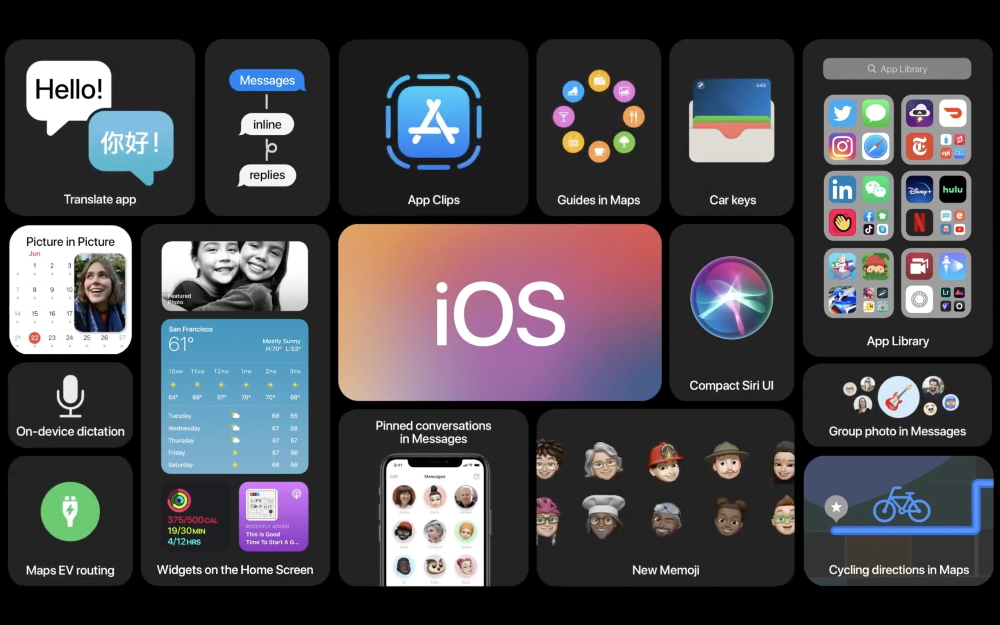
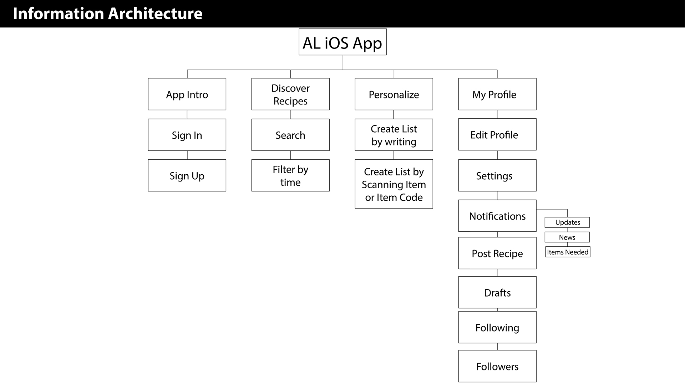
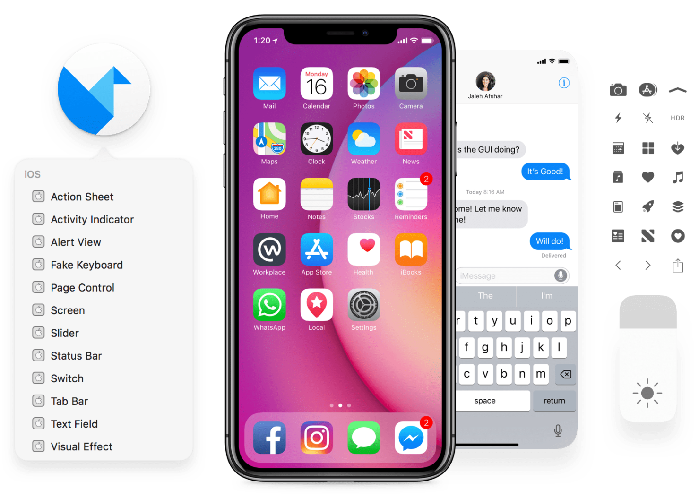
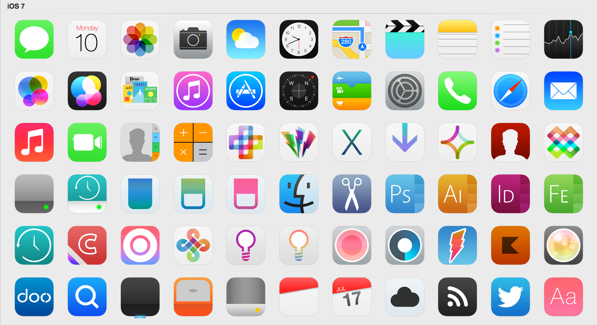
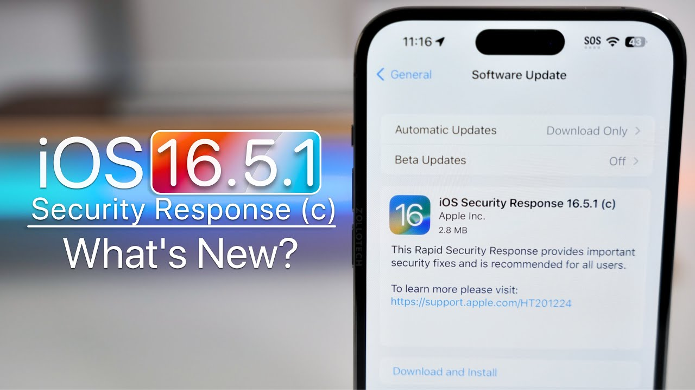

iOS — bu Apple Inc. tomonidan ishlab chiqilgan mobil operatsion tizim bo'lib, iPhone, iPad va iPod Touch qurilmalarida ishlatiladi. Birinchi marta 2007 yilda chiqarilgan iOS, iPhone OS deb nomlangan va 2010 yilda iOS nomini oldi. iOS dunyodagi eng ommabop mobil operatsion tizimlardan biri bo'lib, yuqori darajadagi xavfsizlik, ishlash samaradorligi va foydalanuvchi tajribasini ta'minlaydi.
iOS keng ekotizimga ega bo'lib, Apple'ning App Store do'konida millionlab ilovalar mavjud. Foydalanuvchilar uchun qulay interfeys va intuitiv boshqaruv elementlari iOS'ni juda mashhur qilgan. iOS, shuningdek, Apple ekotizimining boshqa qurilmalari bilan, masalan, macOS va watchOS bilan kuchli integratsiyani ta'minlaydi.
iOS arxitekturasi bir necha qatlamlardan iborat bo'lib, har biri muayyan funksiyalarni bajaradi. Quyida iOS arxitekturasi asosiy komponentlari haqida ma'lumot berilgan:
Core OS — bu iOS'ning asosiy qatlamidir va tizimning apparat bilan bog'liq barcha operatsiyalarini boshqaradi. U kernel, xotira boshqaruvi, fayl tizimi va tarmoq boshqaruvini o'z ichiga oladi. Core OS, shuningdek, xavfsizlik va quvvat boshqaruvi kabi past darajadagi funksiyalarni ham ta'minlaydi.
Core Services — bu tizim xizmatlari qatlamidir va asosiy dasturiy interfeyslarni ta'minlaydi. Bunga Foundation framework, Core Data, CloudKit va boshqa asosiy xizmatlar kiradi. Core Services ilovalar uchun kengaytirilgan funksiyalarni ta'minlaydi va ma'lumotlarni boshqarish imkoniyatini beradi.
Media qatlamida grafik, audio va video ishlov berish xizmatlari mavjud. Core Graphics, Core Animation, AVFoundation va boshqa media xizmatlari bu qatlamda joylashgan. Media qatlami ilovalarga yuqori sifatli multimedia imkoniyatlarini qo'shish imkonini beradi.
Cocoa Touch — bu ilovalar uchun foydalanuvchi interfeyslarini yaratish uchun ishlatiladigan qatlam. UIKit framework, Touch event handling, multi-tasking va boshqa foydalanuvchi interfeysi xizmatlari bu qatlamda joylashgan. Cocoa Touch foydalanuvchilarga sezgir va intuitiv interfeyslar yaratish imkonini beradi.
iOS arxitekturasi qatlamli dizaynga ega bo'lib, har bir qatlam o'ziga xos funksiyalarni bajaradi. Core OS, Core Services, Media va Cocoa Touch qatlamlari iOS operatsion tizimining kuchli va samarali ishlashini ta'minlaydi.
iOS foydalanuvchi interfeysi (UI) intuitiv va qulay bo'lib, foydalanuvchilarga oson boshqarishni ta'minlaydi. Quyida iOS foydalanuvchi interfeysi asosiy elementlari haqida ma'lumot berilgan:
Home Screen — bu iOS qurilmasining asosiy ekrani bo'lib, ilovalar, vidjetlar va boshqa elementlarni ko'rsatadi. Foydalanuvchilar ilovalarni ochish, o'rnatish va tashkil qilish uchun Home Screen'dan foydalanadilar.
Control Center — bu tezkor boshqaruv elementlarini taqdim etuvchi interfeysdir. Foydalanuvchilar ekran yorqinligini sozlash, Wi-Fi va Bluetooth'ni yoqish/o'chirish, musiqani boshqarish kabi funksiyalarga tezkor kirish imkoniyatiga ega bo'ladilar.
Notification Center — bu bildirishnomalarni ko'rsatish va boshqarish uchun ishlatiladigan interfeysdir. Foydalanuvchilar bu yerda yangi xabarlar, ilova bildirishnomalari va boshqa muhim xabarlardan xabardor bo'ladilar.
Multitasking interfeysi foydalanuvchilarga bir nechta ilovalarni bir vaqtda boshqarish imkoniyatini beradi. Foydalanuvchilar ochiq ilovalar orasida tezkor o'tish, ilovalarni yopish va multitasking funksiyalaridan foydalanishlari mumkin.
iOS foydalanuvchilariga qulay boshqaruvni ta'minlash uchun turli xil gesture'larni (harakatlar) qo'llab-quvvatlaydi. Masalan, surish, chimchilash, bosish va ko'tarish kabi harakatlar orqali foydalanuvchilar ilovalarni boshqarishlari mumkin.
iOS foydalanuvchi interfeysi intuitiv va qulay bo'lib, foydalanuvchilarga oson va samarali boshqaruvni ta'minlaydi. Home Screen, Control Center, Notification Center, Multitasking va Gestures iOS foydalanuvchi interfeysining asosiy elementlaridir.
iOS operatsion tizimida dasturlarni boshqarish qulay va samarali funksiyalardan biridir. Quyida iOS tizimida dasturlarni boshqarishning asosiy usullari haqida ma'lumotlar keltirilgan:
App Store — bu iOS uchun rasmiy dastur do'koni bo'lib, foydalanuvchilar bu yerda millionlab ilovalarni ko'rib chiqishlari, yuklab olishlari va o'rnatishlari mumkin. App Store'da har qanday ehtiyoj uchun ilovalar mavjud, jumladan o'yinlar, biznes, ta'lim va boshqa sohalar.
iOS ilovalarni boshqarish imkonini beradi. Foydalanuvchilar ilovalarni yuklab olish, yangilash va olib tashlashlari mumkin. Ilovalar Home Screen'da tashkil qilinadi va papkalar orqali tartiblanadi.
iOS, mobil operatsion tizimlar ichida keng xavfsizlikni ta'minlash uchun muhim xususiyatlarga ega. Quyidagi elementlar iOS xavfsizligini ta'minlashning asosiy qismlarini ifodalaydi:
iOS qurilmalari uchun eng mashhur xavfsizlik usullaridan biri biometrik autentifikatsiya, masalan, Touch ID va Face ID orqali foydalanuvchi autentifikatsiyasi.
iOS dasturlari "App Sandbox" bo'yicha ishlaydi, bu esa har bir dasturning tizim resurslariga chegaralanishini ta'minlaydi, shuningdek, boshqa dasturlar bilan munosabatlarini cheklash.
iOS qurilmalari diskni shifrlash uchun ishlatiladigan AES (Advanced Encryption Standard) ni qo'llaydi, shuningdek, End-to-End shifrlashni foydalanuvchilarga taqdim etadi.
iOS qurilmalari uchun "Secure Boot" protsessi ma'lumotlarni to'g'ri ishlaydigan dasturlarni o'rnatishdan oldin sinovdan o'tkazadi.
"Find My iPhone" xizmati iOS qurilmasini yo'q qilgan vaqtda uni topishga yordam beradi va ma'lumotlarni o'chirish imkonini beradi.
iOS tizimi keng xavfsizlik tajribasi ta'minlash uchun biometric autentifikatsiya, App Sandbox, shifrlash, secure boot protsessi va Find My iPhone xizmati kabi xavfsizlik vositalarini qo'llab-quvvatlaydi. Bu vositalar foydalanuvchilarga xavfsiz va ishonchli mobil muhit yaratadi.